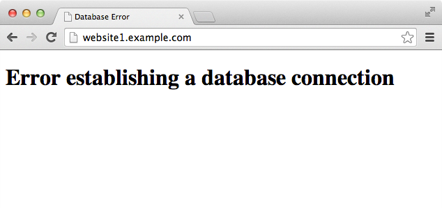

The authors of this online book Hello Future offer cloud automation and Chef training and consultancy.
Say hello@hellofutu.re for more information or follow us on Twitter.
Getting started with Chef
4. Managing multiple nodes
In this chapter we'll take our example WordPress hosting set up to the enterprise level by using Chef to configure multiple nodes.
Too much traffic?
Having too much traffic for a single web server to handle is a nice problem to have! As our imaginary WordPress website empire grows and we get more traffic, we will need to increase our capacity beyond our little web server. We have two options: vertical or horizontal scaling.
Vertical scaling is adding more power to the machine that runs our website or application. It is often the easiest option as code only written to run on a single machine - which is usually most code - can be moved easily to a bigger machine, especially if you already have automated server setup with Chef.
At enterprise level you should probably have a server on standby for redundancy in case of hardware or software failure anyway so you may as well use it to handle traffic.
Horizontal scaling is adding more servers and sharing the load between them. It can also have the advantage of adding redundancy. If we have two web servers handling traffic and one breaks our websites will remain online. If we can separate various parts of our website or application into different services we can have even more redundancy.
Our phpapp default recipe already supports vertical scaling - we can use it to build a new server - but we need to make some changes to it before we can scale horizontally. Let's split up our recipe in two. We'll have a recipe that sets up the MySQL server, database and acesss details and another to set up our web server and site code.
Two recipes
Let's create a recipe called mysql_server and web inside the phpapp cookbook.
On your workstation, create cookbooks/phpapp/recipes/mysql_server.rb in your text editor.
#
# Cookbook Name:: phpapp
# Recipe:: mysql_server
#
# Copyright 2013, YOUR_COMPANY_NAME
#
# All rights reserved - Do Not Redistribute
#
include_recipe "mysql::server"
include_recipe "mysql::ruby"
sites = data_bag("wp-sites")
sites.each do |site|
opts = data_bag_item("wp-sites", site)
mysql_database opts["database"] do
connection ({:host => 'localhost', :username => 'root', :password => node['mysql']['server_root_password']})
action :create
end
mysql_database_user opts["db_username"] do
connection ({:host => 'localhost', :username => 'root', :password => node['mysql']['server_root_password']})
password opts["db_password"]
database_name opts["database"]
privileges [:select,:update,:insert,:create,:delete]
action :grant
end
end
Add the code above. We've included just the parts that are needed to setup the MySQL server.
Now save the file.
Again on your workstation, create cookbooks/phpapp/recipes/web.rb in your text editor.
#
# Cookbook Name:: phpapp
# Recipe:: web
#
# Copyright 2013, YOUR_COMPANY_NAME
#
# All rights reserved - Do Not Redistribute
#
include_recipe "apache2"
include_recipe "mysql::client"
include_recipe "php"
include_recipe "php::module_mysql"
include_recipe "apache2::mod_php5"
apache_site "default" do
enable false
end
sites = data_bag("wp-sites")
sites.each do |site|
opts = data_bag_item("wp-sites", site)
wordpress_site opts["host"] do
path "/var/www/" + opts["host"]
database opts["database"]
db_username opts["db_username"]
db_password opts["db_password"]
template "site.conf.erb"
end
end
Replace the contents of the file with the above. Save the file.
Finally we'll edit the default recipe and simply make it call both new recipes. This will allow us to continue to use the recipe on a single server.
On your workstation, open cookbooks/phpapp/recipes/default.rb in your text editor.
# # Cookbook Name:: phpapp # Recipe:: default # # Copyright 2013, YOUR_COMPANY_NAME # # All rights reserved - Do Not Redistribute # include_recipe "phpapp::mysql_server" include_recipe "phpapp::web"
Replace what's there with the code above. Save the file.
$ knife cookbook upload phpapp
Uploading phpapp [0.1.0]
Uploaded 1 cookbook.
Our server instance from the last chapter should still be running, if so let's just check our new split cookbooks still work. On your node type the following.
$ chef-client
..
Chef Client finished, 7 resources updated
Our recipe still works on a single instance. Now let's try to create an environment with more than one instance. We don't need this instance anymore so feel free to remove it.
Multiple nodes
We now need to create two separate roles. One for web instances and one for database instances. Firstly let's create the role for web servers.
$ knife role create phpapp-web
{
"name": "phpapp-web",
"description": "Role for web nodes",
"json_class": "Chef::Role",
"default_attributes": {
},
"override_attributes": {
},
"chef_type": "role",
"run_list": [
"recipe[apt]", "recipe[phpapp::web]"
],
"env_run_lists": {
}
}
Add the code in green and save the file.
Created role[phpapp-web]
Let's download the role from the Chef server so we have it locally in a Chef repository.
$ knife role show phpapp-web -d -Fjson > roles/phpapp-web.json
Okay, let's create a role for our database server.
$ knife role create phpapp-mysql
{
"name": "phpapp-mysql",
"description": "Role for database server",
"json_class": "Chef::Role",
"default_attributes": {
},
"override_attributes": {
},
"chef_type": "role",
"run_list": [
"recipe[apt]", "recipe[phpapp::mysql_server]"
],
"env_run_lists": {
}
}
Add the code in green and save the file.
Created role[phpapp-mysql]
Again, let's download the role from the Chef server so we have it locally in a Chef repository.
$ knife role show phpapp-mysql -d -Fjson > roles/phpapp-mysql.json
So, let's create a MySQL server node. We'll bootstrap the node using knife. A couple of example commands are listed below but refer to the Introducing Chef Server chapter for more details.
$ knife bootstrap --run-list "role[phpapp-mysql]" --sudo hostname
Replace hostname with the name or IP of the machine.
$ knife rackspace server create --flavor 2 --image 23cebbc9-3219-4a27-9210-d63e1af7181b --run-list "role[phpapp-mysql]"
$ knife ec2 server create --run-list "role[phpapp-mysql]" -I ami-3d160149 --region eu-west-1 -G www,default -x ubuntu --node-name server01 --identity-file ~/.ssh/sshkey.pem
$ knife brightbox server create --flavor typ-c8awf --image img-g8ia6 --run-list "role[phpapp-mysql]" --distro chef-full --ssh-user ubuntu
Once your Chef bootstrap is complete you'll get the following message.
..
xxx.xxx.xxx.xxx Chef Client finished, 28 resources updated
MySQL host
So that's our MySQL server set up. Now we need to create a instance to serve web traffic. First we need to change our cookbook so it supports using a MySQL server on a host other than localhost.
First, we'll edit our wp-config.php.erb template.
Open cookbooks/phpapp/templates/default/wp-config.php.erb in your text editor.
<?php
define('DB_NAME', '<%= @database %>');
define('DB_USER', '<%= @user %>');
define('DB_PASSWORD', '<%= @password %>');
define('DB_HOST', '<%= @host %>');
define('DB_CHARSET', 'utf8');
define('DB_COLLATE', '');
<%= @wp_secrets %>
$table_prefix = 'wp_';
define('WPLANG', '');
define('WP_DEBUG', false);
if ( !defined('ABSPATH') )
define('ABSPATH', dirname(__FILE__) . '/');
require_once(ABSPATH . 'wp-settings.php');
Replace localhost with the code in green. Save the file.
Now open cookbooks/phpapp/definitions/wordpress_site.rb in your text editor.
define :wordpress_site, :path => "/var/www/phpapp", :database => "phpapp", :db_username => "phpapp", :db_password => "phpapp", :db_host => "localhost", :template => "site.conf.erb" do wordpress_latest = Chef::Config[:file_cache_path] + '/wordpress-latest.tar.gz' remote_file wordpress_latest do source 'http://wordpress.org/latest.tar.gz' mode 0644 end directory params[:path] do owner 'root' group 'root' mode 0755 action :create recursive true end execute 'untar-wordpress' do cwd params[:path] command 'tar --strip-components 1 -xzf ' + wordpress_latest creates params[:path] + '/wp-settings.php' end wp_secrets = Chef::Config[:file_cache_path] + '/wp-secrets.php' remote_file wp_secrets do source 'https://api.wordpress.org/secret-key/1.1/salt/' action :create_if_missing mode 0644 end salt_data = '' ruby_block 'fetch-salt-data' do block do salt_data = File.read(wp_secrets) end action :create end template params[:path] + '/wp-config.php' do source 'wp-config.php.erb' mode 0755 owner 'root' group 'root' variables( :database => params[:database], :user => params[:db_username], :password => params[:db_password], :host => params[:db_host], :wp_secrets => salt_data) end docroot = params[:path] server_name = params[:name] web_app server_name do template "site.conf.erb" docroot docroot server_name server_name end end
Add the two bits of code in green. Save the file.
So we can now specify the host. But how do we find it out what the database host is? We can search for a node with the phpapp-mysql role.
Let's go back to the chef-shell and learn how to search for our role.
$ chef-shell -c .chef/knife.rb loading configuration: none (standalone session) Session type: standalone Loading...done. This is the chef-shell. Chef Version: 11.x.x http://www.opscode.com/chef http://wiki.opscode.com/display/chef/Home run `help' for help, `exit' or ^D to quit. Ohai2u andy@computer! chef > nodes.search('role:phpapp-mysql') => [node[servername-11001]]
Type the command in bold, and you'll receive a response similar to the one above. It returns a list of nodes. The list is called an array. To view the first item of the array we need to use [0].
chef > nodes.search('role:phpapp-mysql')[0]
=> node[servername-11001]
We want to find the IP address of our MySQL server node. We can view all the attributes available with y command which will print the data out in YAML format. The attribute you need might be different on platforms.
chef > y nodes.search('role:phpapp-mysql')[0]
...
That will return all the attributes. You'll need to hunt through and find the IP address of the node. You should use the private IP where there is one.
A few examples of where that IP might be:
chef > nodes.search('role:phpapp-mysql')[0].cloud.private_ips[0]
=> 10.x.x.x
chef > y nodes.search('role:phpapp-mysql')[0].ipaddress
=> 10.x.x.x
Make a note of where the private IP address can be found. Press Ctrl-D to quit chef-shell. Now let's update our recipe to do the search.
Open cookbooks/phpapp/recipes/web.rb in your text editor.
# # Cookbook Name:: phpapp # Recipe:: web # # Copyright 2013, YOUR_COMPANY_NAME # # All rights reserved - Do Not Redistribute # include_recipe "apache2" include_recipe "mysql::client" include_recipe "php" include_recipe "php::module_mysql" include_recipe "apache2::mod_php5" apache_site "default" do enable false end db_hosts = search(:node, 'role:phpapp-mysql') if db_hosts.empty? db_host = 'localhost' else begin db_host = db_hosts[0].cloud.private_ips[0] rescue NoMethodError => e db_host = db_hosts[0].ipaddress end end sites = data_bag("wp-sites") sites.each do |site| opts = data_bag_item("wp-sites", site) wordpress_site opts["host"] do path "/var/www/" + opts["host"] database opts["database"] db_host db_host db_username opts["db_username"] db_password opts["db_password"] template "site.conf.erb" end end
Add the code in green. You may need to alter it if you found the private IP in a different place but the code we've provided should work for most. Our changes default to "localhost" so the recipe still works when running on a single server.
Now we upload the latest version of our cookbook!
$ knife cookbook upload phpapp
Uploading phpapp [0.1.0]
Uploaded 1 cookbook.
Let's create a web server.
$ knife bootstrap --run-list "role[phpapp-web]" --sudo hostname
Replace hostname with the name or IP of the machine.
$ knife rackspace server create --flavor 2 --image 23cebbc9-3219-4a27-9210-d63e1af7181b --run-list "role[phpapp-web]"
$ knife ec2 server create --run-list "role[phpapp-web]" -I ami-3d160149 --region eu-west-1 -G www,default -x ubuntu --node-name server01 --identity-file ~/.ssh/sshkey.pem
$ knife brightbox server create --flavor typ-c8awf --image img-g8ia6 --run-list "role[phpapp-web]" --distro chef-full --ssh-user ubuntu
Once your node is bootstrapped, update your hosts file entries for the *.example.com hosts we created in the last chapter and open website1.example.com in your web browser.

Oh dear! Why has that happened? The problem is in our mysql_server recipe.
#
# Cookbook Name:: phpapp
# Recipe:: mysql_server
#
# Copyright 2013, YOUR_COMPANY_NAME
#
# All rights reserved - Do Not Redistribute
#
include_recipe "mysql::server"
include_recipe "mysql::ruby"
sites = data_bag("wp-sites")
sites.each do |site|
opts = data_bag_item("wp-sites", site)
mysql_database opts["database"] do
connection ({:host => 'localhost', :username => 'root', :password => node['mysql']['server_root_password']})
action :create
end
mysql_database_user opts["db_username"] do
connection ({:host => 'localhost', :username => 'root', :password => node['mysql']['server_root_password']})
password opts["db_password"]
database_name opts["database"]
privileges [:select,:update,:insert,:create,:delete]
action :grant
end
end
Our issue is that our call to the mysql_database_user resource does not specify at host for the user. By default the MySQL user that the resource creates is only allowed to connect from localhost. This presents an interesting issue. We could search for nodes with the phpapp-web role and create a user that can connect from each node's IP address but that means any new web server we create will have to wait for chef-client to run again on the MySQL server before it can connect. This isn't a great solution because if we are creating additional web servers it's probably because we want to handle more traffic! Waiting isn't an option.
For now, we'll create a MySQL user that can connect from the private IP range 10.x.x.x. Many cloud providers give you a virtual LAN for your account which keeps the traffic between your nodes private so this isn't an issue but in a production environment you should be sure that you lock this down properly.
First of all, let's have an attribute that allows us to specify a default host for our MySQL users.
Open cookbooks/phpapp/attributes/default.rb in your text editor.
default["phpapp"]["database"] = "phpapp"
default["phpapp"]["db_username"] = "phpapp"
default['phpapp']['path'] = '/var/www/phpapp'
default['phpapp']['server_name'] = 'phpapp'
default["phpapp"]["db_user_host"] = "localhost"
Add the code in green. Save the file.
Open cookbooks/phpapp/recipes/mysql_server.rb in your text editor.
#
# Cookbook Name:: phpapp
# Recipe:: mysql_server
#
# Copyright 2013, YOUR_COMPANY_NAME
#
# All rights reserved - Do Not Redistribute
#
include_recipe "mysql::server"
include_recipe "mysql::ruby"
sites = data_bag("wp-sites")
sites.each do |site|
opts = data_bag_item("wp-sites", site)
mysql_database opts["database"] do
connection ({:host => 'localhost', :username => 'root', :password => node['mysql']['server_root_password']})
action :create
end
mysql_database_user opts["db_username"] do
connection ({:host => 'localhost', :username => 'root', :password => node['mysql']['server_root_password']})
password opts["db_password"]
database_name opts["database"]
privileges [:select,:update,:insert,:create,:delete]
host node['phpapp']['db_user_host']
action :grant
end
end
Add the code in green. Save the file.
We'll now upload our cookbook changes.
$ knife cookbook upload phpapp
Uploading phpapp [0.1.0]
Uploaded 1 cookbook.
Now we'll edit our phpapp-mysql role and override the default attribute with our value that is specific to our set up.
$ knife role edit phpapp-mysql
{
"name": "phpapp-mysql",
"description": "Role for database server",
"json_class": "Chef::Role",
"default_attributes": {
phpapp": {
"db_user_host": "10.%"
}
},
"override_attributes": {
},
"chef_type": "role",
"run_list": [
"recipe[apt]",
"recipe[phpapp::mysql_server]"
],
"env_run_lists": {
}
}
Save your changes to update the role.
Let's download the role from the Chef server so we have it locally in a Chef repository.
$ knife role show phpapp-mysql -d -Fjson > roles/phpapp-mysql.json
We're good to go. Let's connect to the node with the role phpapp-mysql and run chef-client.
# chef-client
..
Chef Client finished, 4 resources updated
If you visit website1.example.com it might now work and you'll get the WordPress installation screen again. However you might find you are still unable to connect. That's what happened to me. I'll show you now how I debugged the issue.
First things first, let's see if we can connect from the command line on the web server node. SSH to that node.
Let's remind ourselves to the details that WordPress is using to connect.
$ cat /var/www/website1.example.com/wp-config.php
<?php
define('DB_NAME', 'website1');
define('DB_USER', 'website1');
define('DB_PASSWORD', '212b09752d173876a84d374333ae1ffe');
define('DB_HOST', '10.226.16.22');
define('DB_CHARSET', 'utf8');
define('DB_COLLATE', '');
We'll use those details now to attempt to connect.
$ mysql -u website1 -h 10.226.16.22 -p212b09752d173876a84d374333ae1ffe website1
ERROR 1129 (HY000): Host 'srv-9mxex.gb1.brightbox.com' is blocked because of many connection errors; unblock with 'mysqladmin flush-hosts'
This means the MySQL server has stopped our web server node connecting because we've been using incorrect access details. Disconnect from the web server node.
Back on your workstation run the following command to find out the root password for the MySQL server.
$ knife search role:phpapp-mysql --attribute mysql.server_root_password 1 items found gswc-mysql: mysql.server_root_password: IARHKfG0I_fiujJ5uBfd
Neat, huh?
Now SSH to the MySQL server node. On that node run the following command.
# mysqladmin flush-hosts -uroot -p
Paste in the password and you should now be able to view the WordPress installation page.

Success! We now have the basis of system that allows us to add more web nodes to handle traffic increases. These more complicated configurations often require a bit more thought however.
For example, by default WordPress saves uploads to the local disk. These uploads would then not be accessable on the other node. There are WordPress plugins that instead store these files to Amazon S3 or alternatives. Issues with multiple node configurations can often benefit from features of individual cloud providers like this.
That's the end of this chapter. In the next chapter we'll look at ways we can speed up our development of cookbooks and improve our workflow.
Don't forget to delete those two nodes we created.